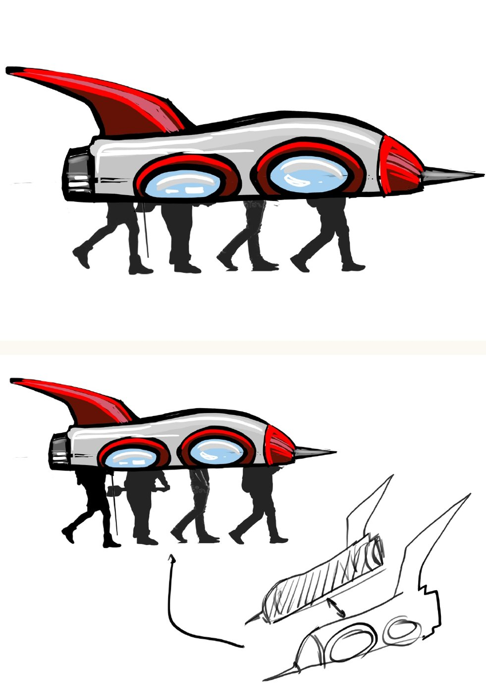

400 × 100 cm · fuselaje de 80 cm
Dos juegos de 100 × 70 cm, con letra grande. El juego técnico define cotas y materiales; la guía explica el orden del trabajo. Para los blancos y gálibos de tamaño real utiliza el paquete SVG/CSV.
